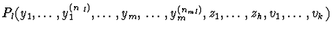
in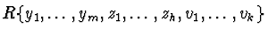
with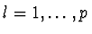
Let zi= exp(Qi) and let vj= log(Rj), where Qi=
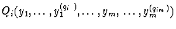
and Rj=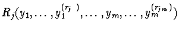
are polynomial functions with coefficients in the differential ring R for all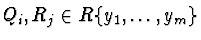
for all i and j. The system of ordinary differential equationsis in general a system of nonlinear and nonalgebraic differential equations.={ Pl=
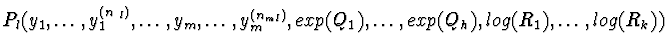
=0, }
Since exp(a) (respectively log(a)) with a in a differential ring Rare uniquely defined by the differential equations
{
y(1)-a(1)y=0 } (respectively
{
ay(1)-a(1)=0 }) up to a constant, then the system  is equivalent to the system
is equivalent to the system
where P(ml) is the derivative of order ml of Pl for all={ Pl= =0, Pl(1)=0,..., Pl(ml)=0, zi= exp(Qi), vj= log(Rj), zi(1)=
Qi(1)zi, Rjvj(1)= Rj(1),,
,
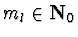
},
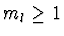
.Let N=max{ntl,qit,rjt:
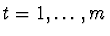
, ,={ Pl= =0, zi(1)= Qi(1)zi, Rjvj(1)= Rj(1), P1l1=
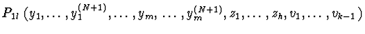
=0,..., Pklk=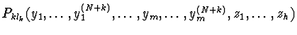
=0,..., P(k+h)lk+h=
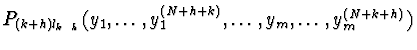
=0, zi= exp(Qi), vj= log(Rj), ,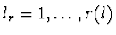
,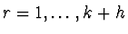
},
Let z=exp(p). The system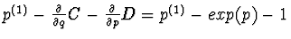
=0,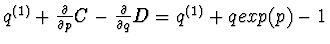
=0}.
By eliminating z the system is equivalent to tha system
is the solution of the system, where c, c1 are arbitrary constants.={ p(1)-z-1=0, q(1)+qz-1=0, p(2)-(p(1))2+p(1)=0, z-exp(p)=0, z(1)-p(1)z=0}.
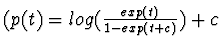
,
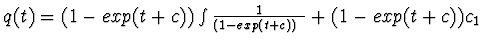
),